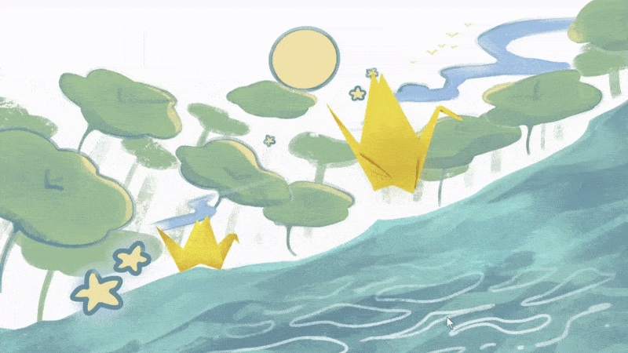
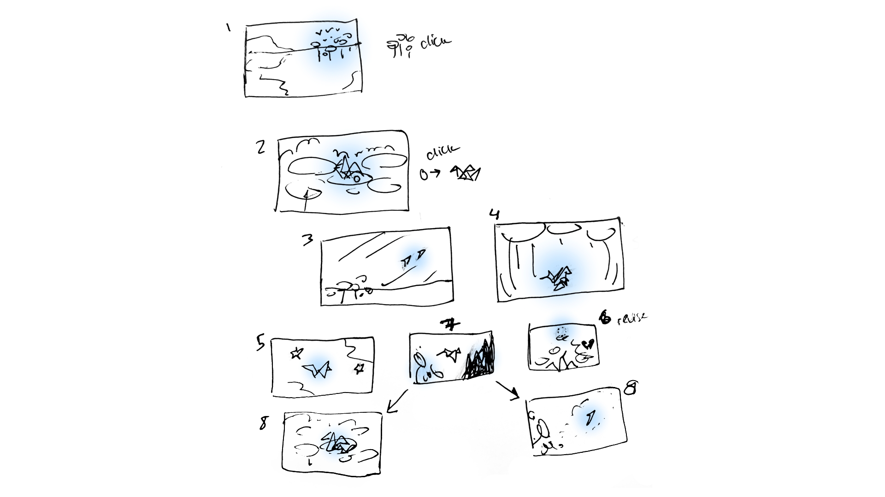
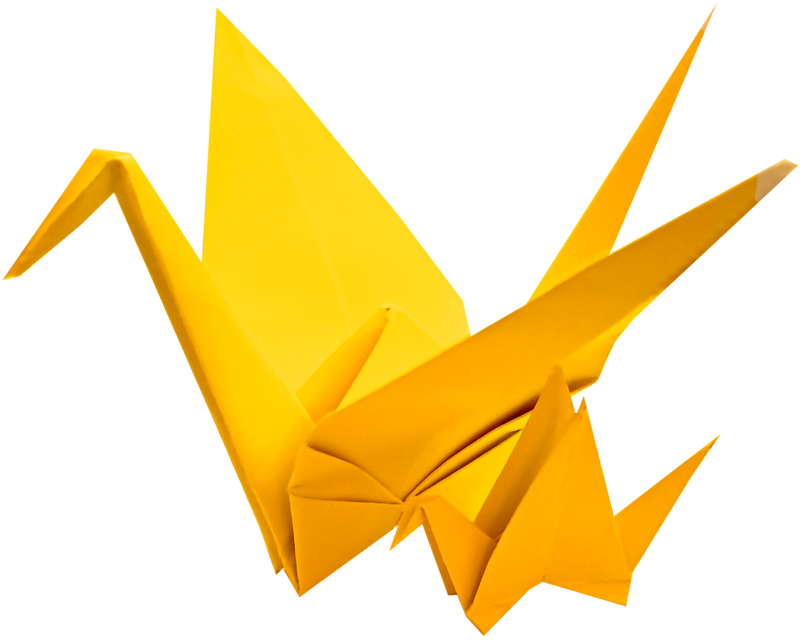

<html lang="en"></html>
<head>
  <meta charset="UTF-8">
  <meta name="viewport" content="width=device-width, initial-scale=1.0">
  <title>Lisa Hà</title>

  <!--GOOGLE FONTS--> 
  <link rel="preconnect" href="https://fonts.googleapis.com">
  <link rel="preconnect" href="https://fonts.gstatic.com" crossorigin>
  <link href="https://fonts.googleapis.com/css2?family=Rubik:ital,wght@0,300..900;1,300..900&display=swap" rel="stylesheet">
  <link href="https://fonts.googleapis.com/css2?family=Shrikhand&display=swap" rel="stylesheet">

  <!--CSS FILES--> 
  <link rel="stylesheet" href="assets/css/style.css">

  <!--FAVICONS--> 
  <link rel="icon" type="image/x-icon" href="assets/img/favicon.png">
  <link rel="apple-touch-icon" href="assets/img/apple-touch-icon.png">
</head>

<body>
  <!--NAVBAR--> 
  <div class="navbar"> 
    <div class="logo">
      <a href="index.html">
        
      </a>
    </div>
    <div class="nav-items">
      <div class="design-nav">
        <a href="design.html">
          design
        </a>
      </div>
      <div class="illustration-nav">
        <a href="illustration.html">
          illustration
        </a>
      </div>
      <div class="games-nav">
        <a href="games.html">
          games
        </a>
      </div>
    </div>
  </div>

  <!--MAIN CONTENT-->
  <div class="content">
    <div style="padding:12px;"></div>
    <div class="flex-wrap-container">
        
        
      <div class="description-container" style="width: 100%;">
        <!--  -->
        <h2>GAMES 🎮</h2>
        <h3>empty nester ✦ 2025</h3>
        <p>
          An illustrated/animated interactive poem reflecting on generational differences, history meeting the present, familial expectations, and the possibility of a more understanding future.
        </p>
        <div class="tags">unity/c#</div>
        <div class="tags">background art</div>
        <div class="tags">poetry</div>

        <!-- <p style="font-size: x-small;">Created with Renpy and Procreate.</p> -->

        <div class="button-container">
            <a class="button" href="https://halisa.itch.io/empty-nester" target="_blank">Play empty nester</a>
        </div>


      </div>

      <!-- <div style="padding:10px; width: 100%">
           
        
     
      </div> -->

      <div class="column-3">
        
    </div>
    

    <div class="column-3">
        
    </div>

    <div class="column-3">
        

    </div>
    <div class="description-container" style="width: 100%;">
        <p>This is my first game made in Unity! For the characters, I created them by folding origami cranes and photographing multiple frames for a stopmotion animation.</p>
    </div>

      <!--  -->

      
    <!-- <div class="column-3"> -->
    <div style="padding:10px; width: 100%">
           
      
   
    </div>
    <!-- </div> -->

    <div class="column-2">
      
    </div>

    <div class="column-2">
        
    </div>

    <div class="description-container" style="width: 100%;">
        <p>I studied how to make dynamic compositions and then applied them to my thumbnail sketches of the scenes.</p>
    </div>

    <!-- <div class="column-2"> -->
        <!--  -->

    <!-- </div> -->

    <div style="padding:10px; width: 100%">
        <div class="" style="background-color: white; width:100%;">
          
        </div>
    </div>

    <div class="description-container" style="width: 100%;">
        <p>I created some thumbnails to show how the story would flow visually. The highlighted blue represents where the player could click to move forward to the next scene. </p>

        <div style="padding:10px; width: 100%">
           
            
         
          </div>

        <h4>Reflection</h4>
        <p>
            
            In the final scenes, I knew I wanted the scenes to diverge, creating the two potential endings. In real life, there are an infinite amount more, but I realized after making this game that both choices of leaving or staying will have a bit of each other in them.<br><br>And, in a way, that means that either choice of leaving or staying could be a win-win, or just is. <strong>Choices don't have to be the "correct" choice to be the one that resonates the most with yourself.</strong></p>
    </div>

  <!-- 🛣️ -->

  <div class="description-container" style="width: 100%;">
    
    <h3>Wander: A Road Trip to Uni ✦ 2025</h3>
    <p>
      A fully illustrated visual novel inspired by my experiences as a new driver, sci-fi books I've read recently, and reflecting over new beginnings/friendships. I've always been interested in combining art, writing, and code to tell stories through games and I'm excited to be releasing my first game in a while. Hope you enjoy!
    </p>
    <div class="tags">renpy/python</div>
    <div class="tags">illustration</div>
    <div class="tags">ui design</div>

    <!-- <p style="font-size: x-small;">Created with Renpy and Procreate.</p> -->

    <div class="button-container">
        <a class="button" href="https://halisa.itch.io/wander" target="_blank">Play Wander</a>
    </div>


  </div>


    <div class="column-3">
        
    </div>
    

    <div class="column-3">
        
    </div>

    <div class="column-3">
        

    </div>

    <div class="column-3">
        
    </div>
    <div class="column-3">
        
    </div>
    <div class="column-3">
        
    </div>


    </div>
  </div>

  <!-- FOOTER -->
  <footer>
    made w/ ♥ © by lisa hà 2025
  </footer>
</body>
</html>